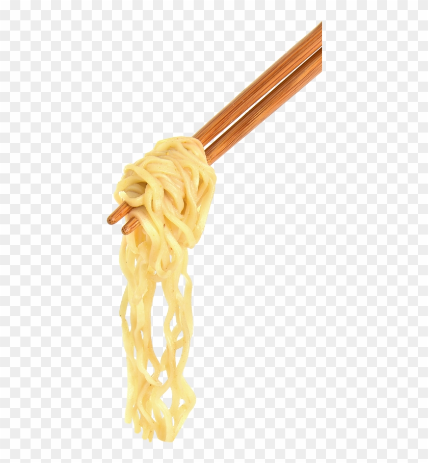

Broth for the Noods
Remember: this is by no means a real hot-pot recipe, more of experimenting with flavors. Feel free to add any extra of the soy sauce or sangria before
using the mixture for thawing. With frozen meats, be mindful of the amount of water you are using to thaw the meat. Feel free to add other ingredients for teh broth;
I'm partial to spicy broths so i usually add chile, but just have fun with it!
Noodles to choose
Again, all noodles are fine but be mindful that the crab meat will dissolve in broth if left in for too long.
- Egg noodles
- Rice noodles
- Angel hair noodles
- Pasta bows
Boil Noodles Separately!
1) Place all ingredients into a ziplock bag to thaw for about 1-2 hours
2) During thawing process, pour soy auce and vinegar into the bag along with a base of water to thaw out. Water will dilute taste so either add less water or more wine/soy sauce!
3) After waiting time, turn stove on (medium to medium high settings)
4) select noodles of choice and prepare a pot to heat up noodles, set pot at medium high as well
5) monitor both hotpot and broth until boiling.
6) After time has passed, let noodles and broth simmer and cool off (ENJOY BROADIE)
Might Need a large bowl to use for it haha